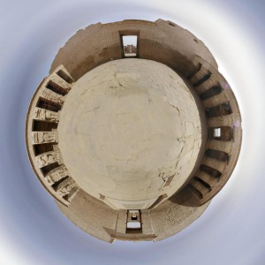

Proiezione stereografica

Proiezione stereografica circolare, basata sull'esempio
equirettangolare di Ben Kreunen
Quella stereografica è una proiezione fisheye alternativa conforme, particolarmente adatta alla stampa più di quanto non la sia la standard fisheye che restituisce immagini eccessivamente distorte ai bordi.
Tutte le versioni della libreria pano12 a partire dalla 2.8.1, forniscono il supporto a questa e ad altre proiezioni più recenti. Diverse interfacce grafiche, inclusi hugin e PTAssembler, la supportano direttamente.
- Pagine di mathworld sulla proiezione stereografica
- wikipedia:Stereographic projection
Confronto con il fisheye standard

Esempio di fisheye standard, primo cortile di Medinet Habu

Esempio di immagine stereografica, primo cortile di Medinet Habu
Immagini stereografiche a "piccolo pianeta"
Le immagini a piccolo pianeta, forniscono un metodo interessante per rappresentare una scena sferica senza il bisogno di utilizzare un visualizzatore di panorami; la proiezione stereografica è generalmente migliore per questo tipo di immagini rispetto alla proiezione fisheye.

"piccolo pianeta" da standard fisheye

"piccolo pianeta" da stereografica